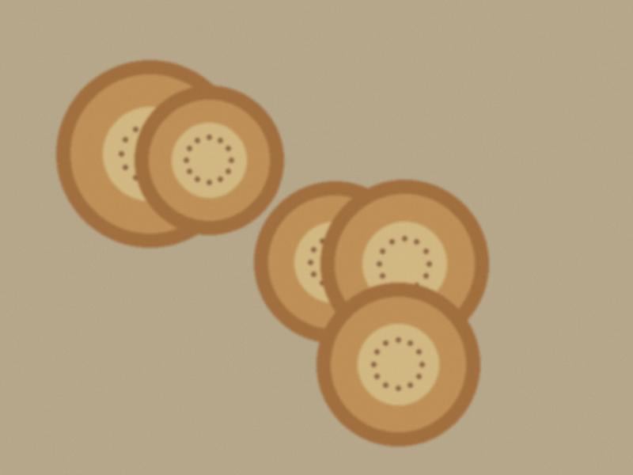

Boorsok, my grandmother's way
28 December 2013 · Bread

Boorsok and the round bread for New Year.1 litre warm milk, 50 g yeast, 2 eggs, 100 g butter, a spoon of sugar, salt, flour until the dough is soft like your ear lobe. Rest one hour. Roll thin, cut in squares, fry in deep oil until they puff and turn gold.
Some people make them big. In our family they are small, so the children can steal them from the dastorkon.
♥ 84
0 comments
Comments are closed.